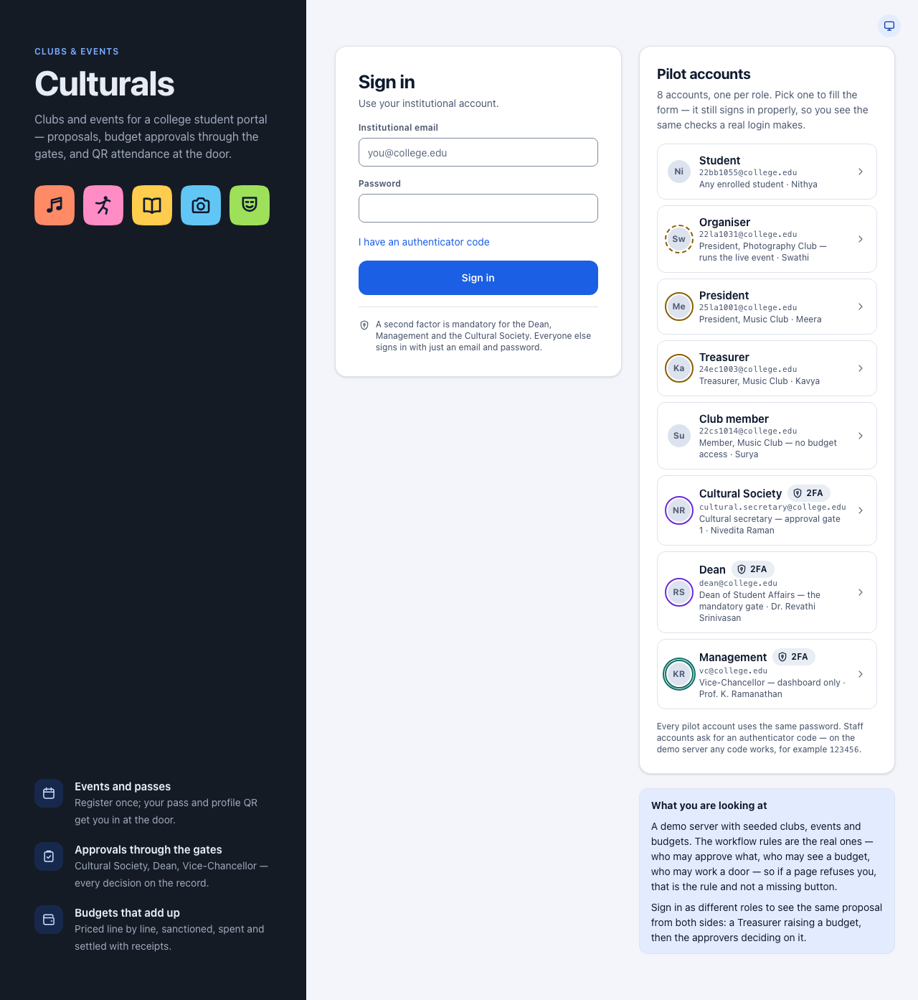
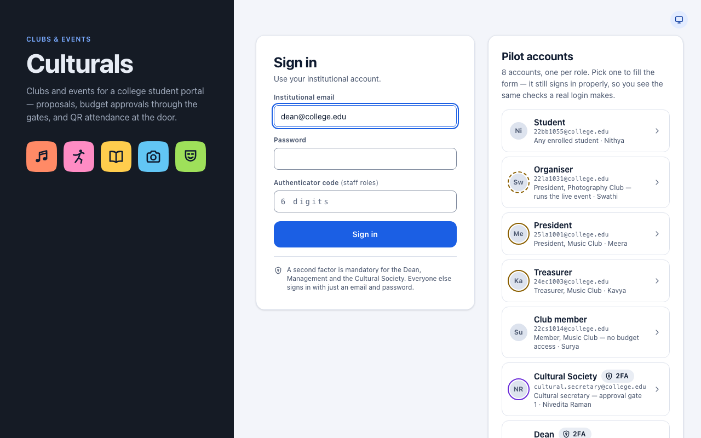
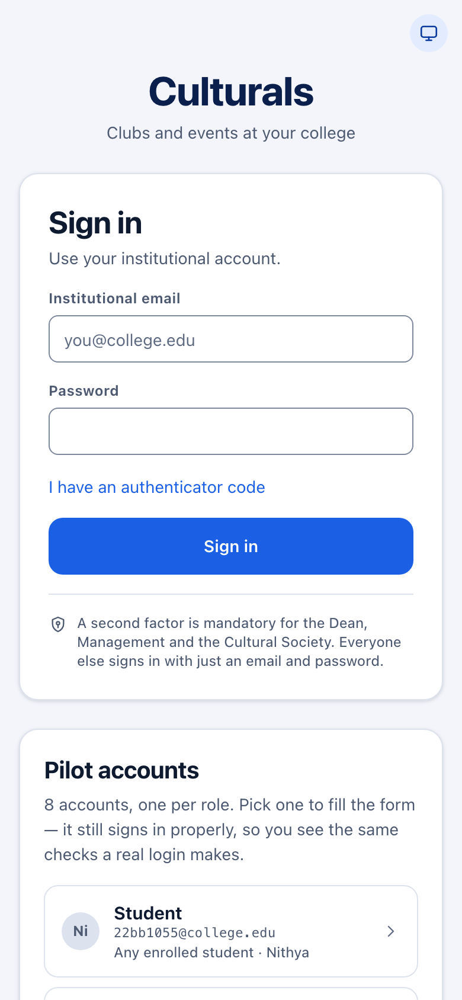
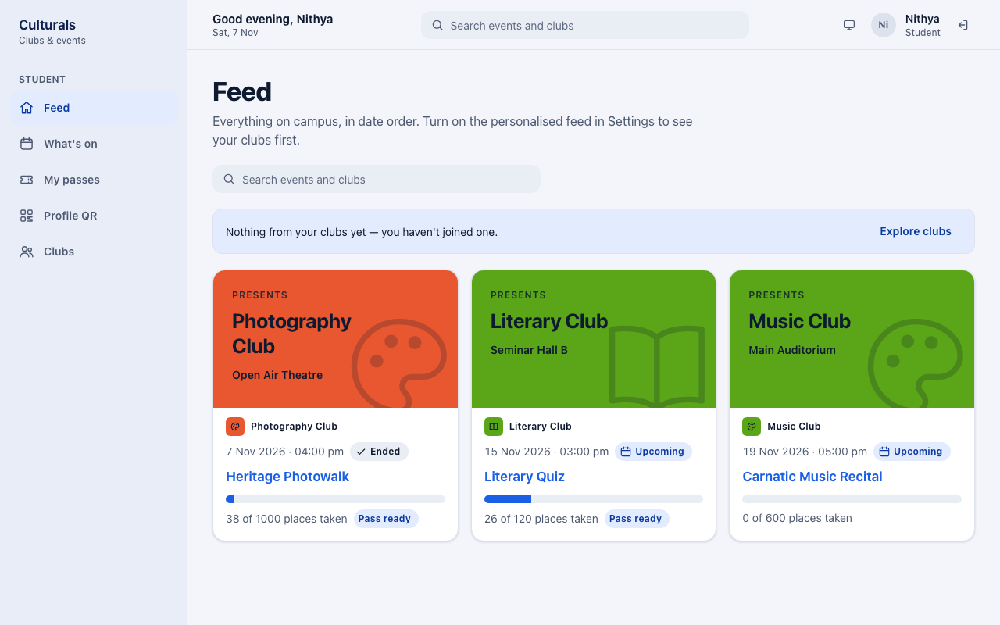
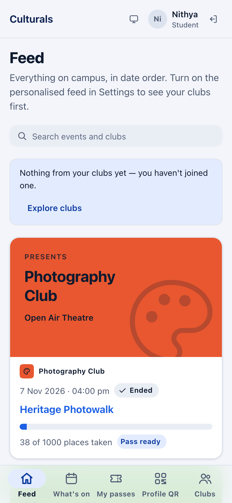
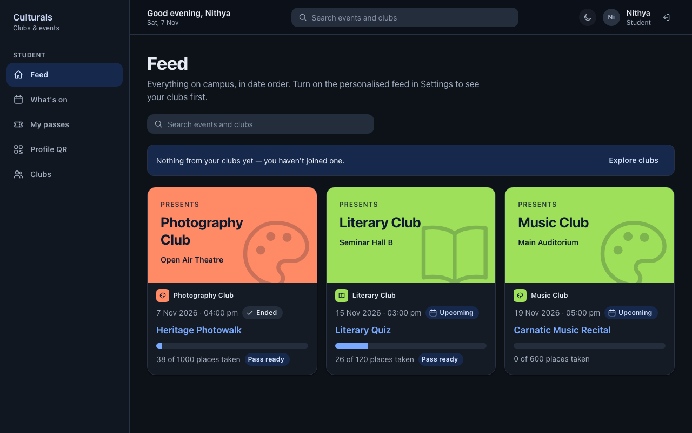

Getting started
Culturals is the college's clubs and events app. Students use it to find events, register and get in at the door with a QR code. Club officers use it to propose events and manage budgets, and college staff use it to approve them. This chapter covers what everyone needs first: signing in, finding your way around and signing out.
Sign in
- Open Culturals in your browser. You land on the Sign in page.
- Type your Institutional email (for example
you@college.edu) and your Password. - Tap Sign in.

After signing in you land on the first page your role allows. For a student that is the Feed. For a club officer or staff member it is their own first page.
Staff: the authenticator code
The Dean, the Vice-Chancellor (Management) and the Cultural Society must enter a second code from their authenticator app. Everyone else signs in with just an email and password.
- Fill in your email and password.
- Tap I have an authenticator code. An Authenticator code field appears.
- Type the 6-digit code from your authenticator app, then tap Sign in.
If you forget step 2, the app asks for the code after your first try. The field appears and you can carry on from there without starting again.

The "Pilot accounts" panel (demo server only)
On the demo server, the sign-in page also shows a Pilot accounts panel with one account for each role: Student, Organiser, President, Treasurer, Club member, Cultural Society, Dean and Management. Tap one to fill in the form, then tap Sign in. You still go through the normal sign-in checks.
- Every pilot account uses the same password,
culturals-demo. - Accounts marked 2FA (Cultural Society, Dean, Management) also need an authenticator
code. On the demo server any code works, for example
123456.
The panel only appears on the demo server. The real college server does not show it.
On a phone, the form comes first and the Pilot accounts panel is below it:

Finding your way around
The menu only lists the pages your role is allowed to use, so two people can see different menus. The pages themselves are the same on a computer and on a phone. Only the menu moves.
On a computer the menu is a sidebar on the left. The bar along the top shows a greeting, a search box (students only: it searches events and clubs on What's on), the theme button, your name and role, and the sign-out button.

On a phone the menu is a bar along the bottom of the screen. Your name, the theme button and the sign-out button are in the top bar. If your role has more than five pages, the last button on the bottom bar is More. Tap it to see the rest.

Light and dark theme
The theme button sits next to your name (on the sign-in page it is in the top-right corner). Each tap moves to the next setting:
- System (a monitor icon) follows your phone's or computer's own setting. This is the default.
- Light (a sun icon).
- Dark (a moon icon).
The app remembers your choice on that device.

Sign out
Tap the sign-out button, the arrow icon just after your name in the top bar (or at the foot of the sidebar on a tablet). You go back to the Sign in page.
Students can also use the Sign out button on Profile QR → Settings.
On a shared or borrowed device, always sign out when you are done.
Good to know
- A page says you can't open it. Pages are tied to your role. If a link takes you to a page your role can't use, the app refuses. This is a permission rule, not a fault.
- "Still signed in as …" If you open the sign-in page while you are still signed in, a note says so. Tap Continue to go back in, or sign in below as someone else.
- Choosing a guide chapter. The menu tells you which chapter to read. Students see Feed, What's on, My passes, Profile QR, Clubs. Club officers also see club pages such as Club events and Budget, and staff see their approval pages.